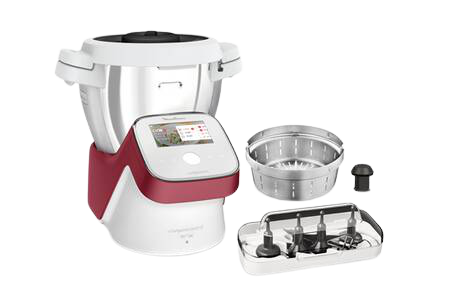
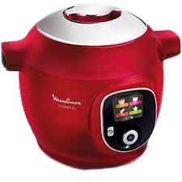
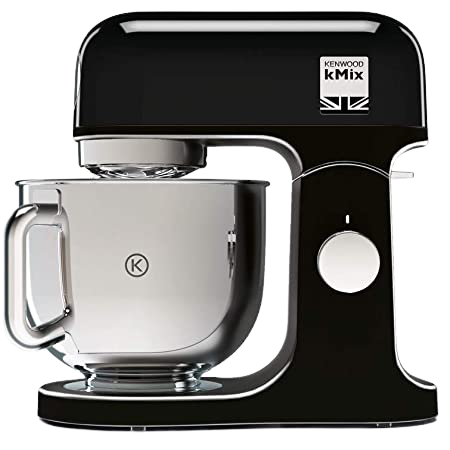
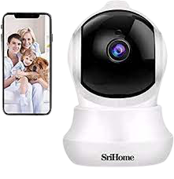
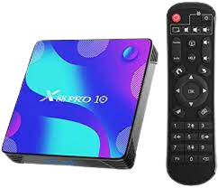
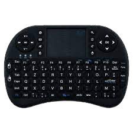

À propos du I-companion.
RECETTES : le robot cuisine pour préparer une multitude de recettes 12 programmes et
sous-programmes automatiques + un mode manuel
CAPACITE : le robot cuiseur Companion permet de cuisiner jusqu'à 10 personnes grâce à sa
capacité utile de 3 L (capacité totale de 4,5 L)
POLYVALENT : température de 30°C à 150°C pour saisir et rissoler vos ingrédients
6 ACCESSOIRES : couteau hachoir, Couteau pétrin/concasseur, Batteur, Mélangeur, Panier
vapeur, Accessoire fond plat
Réparabilité 15 ans, Garantie 2 ans
ACCESSOIRE FOND PLAT : pour cuire de grosses pièces de viande ou de poisson sur toute la
surface du bol
CUISSON COUVERCLE OUVERT : pour un dorage optimal de vos ingrédients
SECURISE : système de sécurité dans le couvercle
Fabriqué en France
Livre de recettes non inclus

À propos de cet article
RECETTES : 180 recettes préprogrammées, disponibles dans votre Cookeo+ multicuiseur
intelligent
APPLICATION : “Mon Cookéo” ; créez et publiez à votre tour vos propres recettes ; plus de
2500 recettes dans l'application
MENUS INTERACTIFS : 4 menus interactifs pour des préparations pas à pas (ingrédients,
recettes, manuel, bibliothèque)
MODES DE CUISSON : 6 modes de cuisson pour cuisiner sous pression, à la vapeur, dorer,
mijoter, cuir doucement, réchauffer ; fonction maintien au chaud jusqu'à 1h30
Réparabilité 10 ans, Garantie 2 ans
CUISSON RAPIDE : grace au mode sous pression
DEPART DIFFERE : jusqu'à 15h
PRATIQUE : pas besoin de surveiller
COMPATIBLE : lave-vaisselle (bol + couvercle intérieur)

À propos du Kenwood kmix
EFFICACE : Variateur de vitesse à 8 niveaux et fonction mélange délicat. kMix dispose
également du démarrage progressif pour éviter les éclaboussures
PUISSANT : Moteur de 1000W d'une puissance exceptionnelle pour réaliser les préparations de
pâtes les plus lourdes
KIT DE PATISSERIE : Le batteur, le pétrin et le fouet ballon vous permettront de réaliser
une infinité de préparations sucrées ou salées
BOL DE 5L : Bol en acier inoxydable d'une capacité de 5L le bol en inox est lavable au lave
vaisselle
DESIGN : Corps en métal robuste et Design Vintage en font un objet déco dans la cuisine

A propos de la caméra imou
RÉSOLUTION 2K+ VISION NOCTURNE: Cette caméra de sécurité intérieure 4MP offre une qualité
vidéo supérieure (2560 x 1440), capture plus de détails vidéo, mieux identifier les intrus
ou autres menaces de sécurité. Et la dernière compression H.265 permet d'économiser 50%
d'utilisation du stockage avec la même qualité vidéo (256 g peuvent stocker environ 14
jours). La vision nocturne supérieure permet une clarté avec des détails riches même dans
l'obscurité totale, une vision nocturne jusqu'à 33 pi
VUE À DISTANCE À 360 ° ET AUDIO À 2 VOIES: Cette caméra intérieure a une rotation
horizontale de 0 à 355° et verticale de -5 à 80°. Visualisez chaque recoin de votre maison
avec un contrôle facile du panoramique et de l'inclinaison via l'application Imou Life
pendant votre absence. Le haut-parleur et le microphone intégrés vous permettent d'interagir
avec votre famille et vos animaux de compagnie
DÉTECTION DES HUMAINS ET DU SON : La puissante technologie de traitement d'image permet à
cette caméra d'intérieur de distinguer rapidement les mouvements humains des animaux pour
éviter les fausses alarmes. Une notification instantanée vous sera envoyée lorsque la caméra
de sécurité détecte des pleurs de bébé, des aboiements de chien ou d'autres sons anormaux.
Et vous pouvez ajuster la région de détection et la sensibilité, définir le calendrier
d'alarme
SUIVI INTELLIGENT : en un clic pour activer le suivi intelligent, la caméra wifi se
concentrera sur et suivra les personnes ou les objets en mouvement, enregistrera des vidéos
en temps réel et vous enverra des alertes instantanées si la fonction de détection humaine
est activée. Vous pouvez vérifier les enregistrements avec une carte Micro SD ou le Cloud
Imou, vous tenant au courant de ce qui se passe à la maison/au bureau/au magasin de
n'importe où
STOCKAGE SÉCURISÉ ET OPTIONNEL : 100 % conforme au règlement sur la protection des données
GDPR pour améliorer la protection de votre vie privée. Seuls vous et votre utilisateur
autorisé avez accès aux images et vidéos stockées sur la carte Micro SD (maximum 256 Go), le
Cloud Imou ou un enregistreur vidéo en réseau. Et vous pouvez activer le mode de
confidentialité pour masquer l'objectif de la caméra lorsque vous êtes à la maison ou chaque
fois que vous ne voulez pas qu'il enregistre

À propos de la box- android-tv.
【Android 11.0】 Cette boîte Android TV compatible avec le système d'exploitation Android
10.0. Il a 2 Go de DDR et 16 Go de stockage intégré, qui peuvent être mis à niveau avec une
carte SD supplémentaire à 64 Go. Le système d'exploitation mis à jour garantit des
performances plus rapides.
【4K /3D】Ce boîtier TV est capable de diffuser en 4K HDR, ce qui vous permet de profiter
d'une qualité d'image plus immersive avec un accès à une 4K Ultra HD vive jusqu'à 60 ips et
HDR. Il arbore également un accélérateur graphique 3D, vous permettant d'amener le cinéma 3D
directement dans votre salon. La superbe puce RK3318 Quad-Core 64 bits YCortex-A53 offre un
bon encodage vidéo et un matériel décent, ce qui vous permet d'exécuter des vidéos de haute
qualité sans mise en mémoire tampon.
【Grande connectivité port】 Port HD 2.0, port AV, port réseau à l'arrière de l'appareil vous
permet d'établir une connexion de haute qualité pour les meilleures performances visuelles
et audio. De plus, il dispose d'un WIFI double bande (2,4 g / 5,8 g 802.11ac), USB 3.0, port
USB 3.0 et une connexion Ethernet 100/ 1000M.
【Système stable】 Le boîtier TV stable, que vous pouvez allumer ou éteindre lors de la
configuration, offre de nombreux avantages en vous donnant un accès complet pour installer
des applications qui ne seraient normalement pas compatibles avec d'autres téléviseurs
Netflix channel.
【Forte stabilité】Le système d'exploitation mis à jour garantit des performances plus
rapides, une compatibilité logicielle améliorée et une plus grande disponibilité des
derniers jeux et applications. Et il donne une forte stabilité à ce box.

À propos de la télécommande clavier.
Mini Clavier ergonomique sans fil (AZERTY)
Pavé tactile multi-touch avec sensibilité réglable (DPI) et défilement des pages
Batterie au Lithium rechargeable avec le câble fourni.
Récepteur sans fil USB Wireless RF 2.4 GHz inclus.
Version Française officiel.